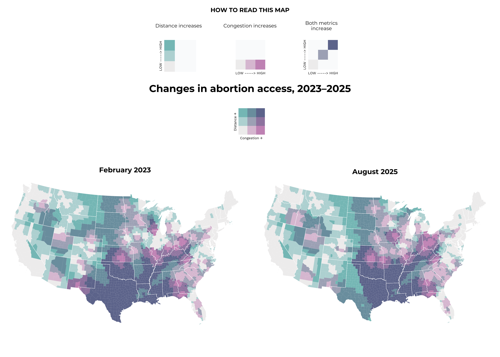
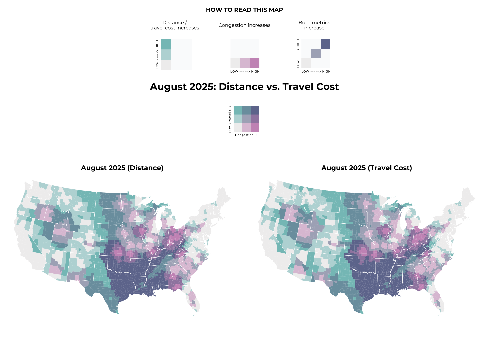
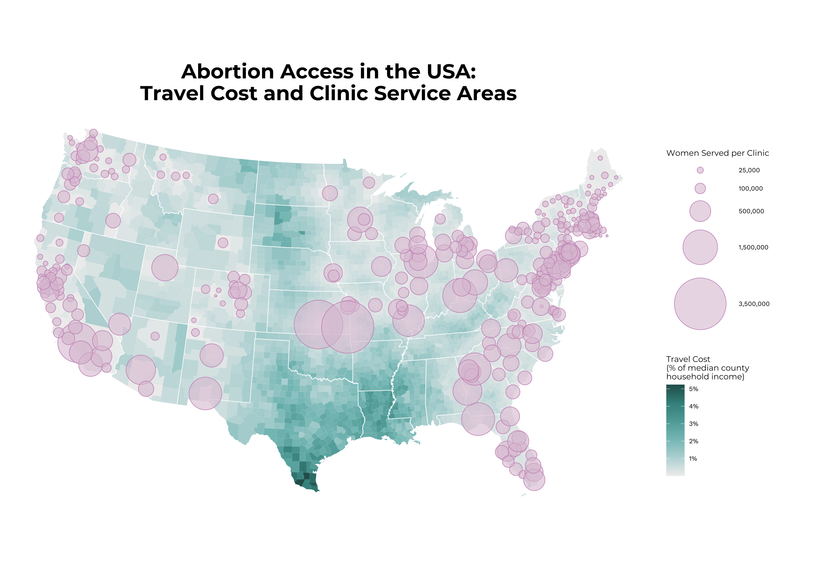

A visual look at how access to abortion clinics has changed across the United States since the overturning of Roe v. Wade.
Author
Clare McGarvey
Published
Invalid Date
Introduction
In June of 2022, the U.S. Supreme Court overturned the historic 1973 Roe v. Wade ruling, eliminating the constitutional right to abortion that had been protected for almost 50 years. The original ruling had established a federally-mandated legislative framework that outlined minimum standards for abortion access, with its reversal shifting legal control into the hands of the states.
The visualisation below captures the effect this overturn in February of 2023, after near-total bans were effectively enacted in 14 states. It was developed by Aaron Bycoffe and Elena Mejía for the article ‘What Happens If North Carolina Bans Abortion? Or Ohio? Or Florida?’, published on the 8th of March 2023 by the political analysis outlet FiveThirtyEight. At the time of publish, Utah had just announced they would ban abortions and other Republican-controlled states were looking like they may follow suit. The interactive graphic is well-designed and provides the reader with a geographical understanding of the (then) current state of abortion access and conceptualises how this would change if different states were to follow in Utah’s footsteps.
The graph depicts two related dimensions of abortion access, the driving distance in miles to the closest abortion clinic and the average number of reproductive-aged women that each clinic serves, used as a rough stand-in for appointment availability. It demonstrates that the effects of state-level abortion restrictions are not confined to the states enacting them. Banning abortion in one state forces residents to travel long distances for care, sometimes crossing multiple state borders before reaching a facility. This increases the pressure and demand on these clinics in neighbouring states, pushing up the wait times for both travellers and locals.
I selected this graph as I was especially interested in working with spatial data and I feel the topic is one of great importance. I thought the map was visually attractive, impactful and illustrated clearly the ripple effects of the law changes. It would have been especially useful at the time to help Americans understand and plan for these changes.
I replicated the graph in a static form, as per the instructions of the course, showing abortion access at the time of publish with data provided as of February 11th 2023. The original article has been removed following Disney’s takeover and shut down of FiveThirtyEight, but it can be viewed here via the Internet Archive.
## Replication
Libraries
library(tidyverse)
── Attaching core tidyverse packages ──────────────────────── tidyverse 2.0.0 ──
✔ dplyr 1.1.4 ✔ readr 2.1.5
✔ forcats 1.0.1 ✔ stringr 1.6.0
✔ ggplot2 4.0.0 ✔ tibble 3.3.0
✔ lubridate 1.9.4 ✔ tidyr 1.3.1
✔ purrr 1.2.0
── Conflicts ────────────────────────────────────────── tidyverse_conflicts() ──
✖ dplyr::filter() masks stats::filter()
✖ dplyr::lag() masks stats::lag()
ℹ Use the conflicted package (<http://conflicted.r-lib.org/>) to force all conflicts to become errors
library(sf) # Spacial plotting
Linking to GEOS 3.13.0, GDAL 3.8.5, PROJ 9.5.1; sf_use_s2() is TRUE
library(tigris) # The official U.S. Census Bureau TIGER
To enable caching of data, set `options(tigris_use_cache = TRUE)`
in your R script or .Rprofile.
Rows: 628400 Columns: 17
── Column specification ────────────────────────────────────────────────────────
Delimiter: ","
chr (10): origin_fips_code, origin_county_name, origin_state, dest_fips_code...
dbl (7): origin_population, monthlydate, year, month, distance_origintodest...
ℹ Use `spec()` to retrieve the full column specification for this data.
ℹ Specify the column types or set `show_col_types = FALSE` to quiet this message.
abortion_access <-tibble(abortion_access)
The dataset contains data on the driving distances to the nearest abortion facility of each U.S. county by month. It includes abortion access from January 1, 2009 to the most recently available data (last updated on August 18th 2025). The database was compiled by economics Professor Caitlin Myers for academic research purposes. It can be accessed on OSF here.
The data will therefore be filtered to include only those observations from February 2023.
# Filtering to February 2023access_feb2023 <- abortion_access |>filter(year ==2023& month ==02)
Shapefiles
To build the map, spatial shapefile data was used from the U.S. Census Bureau. These shapefiles are accessible in R through the tigris package and contain polygon shapes for each county and state, along with identifying information like names and FIPS codes. This data was converted to simple features (sf) objects so it can be used for mapping with ggplot2, and areas outside the continental U.S. were excluded to mimic the original graph.
# Alaska, Hawaii, American Samoa, Guam, Northern Mariana Islands, Puerto Rico # and the U.S. Virgin Islandsnon_continental <-c("02", "15", "60", "66", "69", "72", "78") counties <-counties(cb =TRUE, year =2023) |># Loading the county boundariesst_as_sf() |># Converting to an sf filefilter(!STATEFP %in% non_continental) # Removing non-continental USA states <-states(cb =TRUE, year =2023) |># Loading the state boundariesst_as_sf() |># Converting to an sf filefilter(!STATEFP %in% non_continental) # Removing non-continental USA
The data on abortion access in February 2023 was then merged with the spatial data, matching counties by their FIPS code. Nine counties in Connecticut could not be matched as they do not appear in the abortion access dataset. These counties appear with no data in the final map, but as they are relatively tiny compared to the country this doesn’t present any issues.
Before construction of the bivariate map, the two variables of interest (distance to the nearest abortion provider and the average service population per clinic) were examined for understanding and to ensure they were suitable for bivariate analysis. Summary statistics were generated and it was checked both variables were stored as numeric variables.
summary(map_data$distance_origintodest)
Min. 1st Qu. Median Mean 3rd Qu. Max. NA's
0.2411 40.2746 85.5501 138.6014 185.5315 831.1890 9
summary(map_data$dest_asp)
Min. 1st Qu. Median Mean 3rd Qu. Max. NA's
617 100146 231120 429470 496084 1967418 9
class(map_data$distance_origintodest)
[1] "numeric"
class(map_data$dest_asp)
[1] "numeric"
Observations were then classified using the bi_class() function from the biscale package, which assigns each county to one of nine categories. These categories are dependent on the quantiles of each variables, split equally in thirds.
Bivariate classes allow the two variables to be visualised simultaneously. The three levels of each variable are combined to form nine distinct classes, making it possible to see where the barriers overlap. In this way, distance, congestion and the interaction of both elements can be visualised, for example, counties that are both far from the nearest clinic and where that clinic has to serve a large number of patients, helping to illustrate areas most impacted by the ruling.
The colour palette, although similar to the inbuilt ones in the biscale package, was customised by FiveThirtyEight. This was replicated manually, using an online colour picker tool to identify the shades from the legend and assign them to a class. This was also done for the three additional explanatory legends, which illustrate each element separately.
# Main Legendcustom_palette <-c("1-1"="#f0efef", # low congestion, low distance"2-1"="#dec4d8", # medium congestion, low distance "3-1"="#cb96c0", # high congestion, low distance"1-2"="#bad8d9", # low congestion, medium distance"2-2"="#acb0c1", # medium congestion, medium distance"3-2"="#9f87ae", # high congestion, medium distance"1-3"="#85c2c1", # low congestion, high distance"2-3"="#7b9ead", # medium congestion, high distance"3-3"="#6f789c"# high congestion, high distance)# Distancedistance_palette <-c("1-1"="#f0efef", "2-1"="#fafbfc","3-1"="#fafbfc", "1-2"="#bad8d9","2-2"="#fafbfc", "3-2"="#fafbfc","1-3"="#85c2c1", "2-3"="#fafbfc","3-3"="#fafbfc")# Congestioncongestion_palette <-c("1-1"="#f0efef", "2-1"="#dec4d8","3-1"="#cb96c0", "1-2"="#fafbfc","2-2"="#fafbfc", "3-2"="#fafbfc","1-3"="#fafbfc", "2-3"="#fafbfc","3-3"="#fafbfc")# Both Metricsboth_palette <-c("1-1"="#f0efef", "2-1"="#fafbfc","3-1"="#fafbfc", "1-2"="#fafbfc","2-2"="#acb0c1","3-2"="#fafbfc","1-3"="#fafbfc", "2-3"="#fafbfc","3-3"="#6f789c")
Legends
Fonts
Custom fonts were added to match those of the original graph. I believe FiveThirtyEight used Decima Pro for the legend and Sequel Sans Heavy Body for the title, however, these fonts are copyrighted, so closely related fonts Work Sans and Montserrat were used instead.
The main legend shows the colour scale of the bivariate classes, with congestion and distance on the X and Y axis respectively. Each of the colours in the nine squares represents a combination of the two variables.
In addition, three explanatory legends were created that show separately the colours representing increases in distance, congestion, and the combination.
Combined these legends help the reader to interpret the meaning of the map.
The explanatory legends were then formatted and arranged. A function was first used to add titles above the three legends, and then they were aligned in a singlar row. Finally, the title “What happens if more states ban abortion?” and subtitle “HOW TO READ THIS MAP” were incorporated.
# Function to combine the legends and title legend_with_title <-function(legend_plot, title_text) {plot_grid(ggdraw() +draw_label( title_text, # Adding title fontfamily ="SubtitleFont",size =10,hjust =0.5), # Centring legend_plot, # Adding legend ncol =1, # One column (vertical alignment)rel_heights =c(0.25, 1) # Relative heights: title, legend )}# Using the function to create the three legend blocksdistance_block <-legend_with_title( distance_legend,"Distance increases")
Warning in grid.Call(C_stringMetric, as.graphicsAnnot(x$label)): font family
'LegendFont' not found in PostScript font database
Warning in grid.Call(C_stringMetric, as.graphicsAnnot(x$label)): font family
'LegendFont' not found in PostScript font database
Warning in grid.Call(C_stringMetric, as.graphicsAnnot(x$label)): font family
'LegendFont' not found in PostScript font database
Warning in grid.Call(C_stringMetric, as.graphicsAnnot(x$label)): font family
'LegendFont' not found in PostScript font database
Warning in grid.Call(C_stringMetric, as.graphicsAnnot(x$label)): font family
'LegendFont' not found in PostScript font database
Warning in grid.Call(C_stringMetric, as.graphicsAnnot(x$label)): font family
'LegendFont' not found in PostScript font database
Warning in grid.Call(C_stringMetric, as.graphicsAnnot(x$label)): font family
'LegendFont' not found in PostScript font database
Warning in grid.Call(C_stringMetric, as.graphicsAnnot(x$label)): font family
'LegendFont' not found in PostScript font database
Warning in grid.Call(C_stringMetric, as.graphicsAnnot(x$label)): font family
'LegendFont' not found in PostScript font database
Warning in grid.Call(C_stringMetric, as.graphicsAnnot(x$label)): font family
'LegendFont' not found in PostScript font database
Warning in grid.Call(C_stringMetric, as.graphicsAnnot(x$label)): font family
'LegendFont' not found in PostScript font database
Warning in grid.Call(C_stringMetric, as.graphicsAnnot(x$label)): font family
'LegendFont' not found in PostScript font database
Warning in grid.Call(C_stringMetric, as.graphicsAnnot(x$label)): font family
'LegendFont' not found in PostScript font database
Warning in grid.Call(C_stringMetric, as.graphicsAnnot(x$label)): font family
'LegendFont' not found in PostScript font database
congestion_block <-legend_with_title( congestion_legend,"Congestion increases")both_block <-legend_with_title( both_legend,"Both metrics\nincrease")# Aligning the three blocks in a row explanatory_legends <-plot_grid(NULL, # Adding space on left for formatting distance_block, congestion_block, both_block,NULL, # Adding space on right for formattingnrow =1, # One rowrel_widths =c(2, # Left white space1,1,1,2# Right white space ),align ="h"# Horizontally aligned )# Title helper functiontitle_label <-function(text, size =12) {ggdraw() +draw_label( text, fontfamily ="TitleFont", size = size)}# Stacking the legend with the title how_to_read_full <-plot_grid(title_label("HOW TO READ THIS MAP"), explanatory_legends, # Three explanatory legends title_label("What happens if more states ban abortion?", 20),ncol =1,rel_heights =c(0.35, # Top sub-title ("How to read") 1, # Explanatory legends 0.4) # Title )
Replication Map
The main map was created using ggplot2 where geom_sf() draws the counties and colours them according to their bivariate class, adding state boundaries over the top. The map projection used was Alber’s Equal Area, which, with some trial and error, was found to curve the map identically to the original graphic. A minimal theme was used and margin were adjusted to assist with later formatting.
# Themebase_map_theme <-theme_minimal() +theme(plot.margin =margin( # Removing the extra margin spacet =0, # Topr =0, # Rightb =0, # Bottoml =0), # Leftplot.title =element_text(family ="TitleFont", size =14, hjust =0.5) )# Map helper functionbivariate_map <-function(data, title_text =NULL, palette = custom_palette) {ggplot() +# Counties, fill and borders geom_sf(data = data,mapping =aes(fill = bi_class), # Bi-class crated earliercolour ="white", # County lines size =0.0005, # Thinning the county lines show.legend =FALSE) +# State linesgeom_sf(data = states,fill =NA, # States are transparent - filled by county above colour ="white", # State linessize =0.2,show.legend =FALSE) +# Colour scale bi_scale_fill(pal = palette, dim =3) +# Coordinate system: using the EPSG: 5070 (Albers Equal Area) coord_sf(crs =st_crs(5070), datum =NA) +# Removing latitude/ longitude lines base_map_theme +labs(title = title_text)}# Map map_feb2023 <-bivariate_map(map_data)
Final Graph
Finally, the map was combined with all legends and titles, and the relative heights of each section was adjusted to align with the original graph.
The bivariate graph provides a useful simple depiction of abortion access in the United States. It allows the reader to identify the geographical areas where access is the most difficult, according to the distance and congestion of closest clinic. The bivariate colour scheme makes it possible to identify distinctions in locations where distance is the main barrier, where congestion is the main barrier, and areas where both overlap. For example, you can see that distance is the primary barrier in the West, congestion is the main concern for those in the Midwest and Southeast, and both elements interact heavily in the South.
This information can be understood with careful reference to the legends, however, interpreting the nine different colours can be time consumin and confusing. The bivariate choropleth provides a way of quickly identifying the general levels of abortion access across the country, as logically the darker areas represent where access is the most difficult, however, correctly understanding what exactly is revealed about the two variables is more challenging. Additionally, the static nature of my replication prevents users from seeing the exact distance, average service population, and location of the nearest clinic for each county.
The final limitation to note is that the quantile-based classification divides the data into three groups containing an equal number of counties. As a result, counties with very different absolute levels of distance or congestion may be represented by the same category if they fall within the same quantile range. Furthermore, counties at the border of the quantiles are assigned to different categories so visually appear more distinct than counties with larger absolute differences that fall within the same quantile. While quantiles are useful for demonstrating broad geographical patterns, they can obscure the true magnitude of disparities and should be interpreted as indicating relative rather than absolute access.
Abortion Access as of August 2025
This section updates the map to reflect abortion access in the United States as of August 2025, using the most recently available data. This is done to facilitate a direct comparison, and maintains the same style and methodological approach.
Data Preparation
The abortion access dataset contains monthly observations for each county. To isolate the most recent entry, the dataset was grouped by county and filtered. A check was done to confirm the number of county observations matches that of the February 2023 dataset, ensuring the updated map reflects changes in access rather than data coverage.
# Most recent observationsaccess_aug2025 <- abortion_access |>group_by(origin_fips_code) |>slice_max(order_by = year *100+ month) |># Converting date into YYYYMMungroup()# Checking number of observations access_aug2025 |>nrow()
[1] 3142
As in the February 2023 graph, the most August 2025 data was merged into the counties dataset. The number of missing counties remained as 9.
# Merging the data by FIPS code map_data_aug2025 <- counties |>left_join( access_aug2025,by =c("GEOID"="origin_fips_code") )# Number of unmatched countiesmap_data_aug2025 |>filter(is.na(dest_fips_code)) |>nrow()
# Adding a title to the replicated mapmap_feb2023_wtitle <- map_feb2023 +labs(title ="February 2023")# Combining the February 2023 and August 2025 maps maps_comparison <-plot_grid( map_feb2023_wtitle, map_aug2025,ncol =2, # Two columns for side-by-side comparisonalign ="h", # Horizontally alignedaxis ="tb"# Align top and bottom edges)
Warning in grid.Call(C_stringMetric, as.graphicsAnnot(x$label)): font family
'TitleFont' not found in PostScript font database
Warning in grid.Call(C_stringMetric, as.graphicsAnnot(x$label)): font family
'TitleFont' not found in PostScript font database
Warning in grid.Call(C_stringMetric, as.graphicsAnnot(x$label)): font family
'TitleFont' not found in PostScript font database
Warning in grid.Call(C_stringMetric, as.graphicsAnnot(x$label)): font family
'TitleFont' not found in PostScript font database
Warning in grid.Call(C_stringMetric, as.graphicsAnnot(x$label)): font family
'TitleFont' not found in PostScript font database
Warning in grid.Call(C_stringMetric, as.graphicsAnnot(x$label)): font family
'TitleFont' not found in PostScript font database
Warning in grid.Call(C_stringMetric, as.graphicsAnnot(x$label)): font family
'TitleFont' not found in PostScript font database
Warning in grid.Call(C_stringMetric, as.graphicsAnnot(x$label)): font family
'TitleFont' not found in PostScript font database
Warning in grid.Call(C_stringMetric, as.graphicsAnnot(x$label)): font family
'TitleFont' not found in PostScript font database
Warning in grid.Call(C_stringMetric, as.graphicsAnnot(x$label)): font family
'TitleFont' not found in PostScript font database
Warning in grid.Call(C_stringMetric, as.graphicsAnnot(x$label)): font family
'TitleFont' not found in PostScript font database
Warning in grid.Call(C_stringMetric, as.graphicsAnnot(x$label)): font family
'TitleFont' not found in PostScript font database
Warning in grid.Call(C_stringMetric, as.graphicsAnnot(x$label)): font family
'TitleFont' not found in PostScript font database
Warning in grid.Call(C_stringMetric, as.graphicsAnnot(x$label)): font family
'TitleFont' not found in PostScript font database
# Legends with updated titlehow_to_read_comparison <-plot_grid(title_label("HOW TO READ THIS MAP"), explanatory_legends, title_label("Changes in abortion access, 2023–2025", 20), # Updated titlencol =1,rel_heights =c(0.35, # Top sub-title ("How to read") 1, # Explanatory legends 0.4# Main title ))# Plot final_comparison_plot <-assemble_plot( how_to_read_comparison, legend, maps_comparison)final_comparison_plot

Looking at the comparison, congestion appears to have decreased in West Texas and northward through Colorado and Wyoming. This may be associated with the opening of new clinics in New Mexico, Colorado, and Wyoming, which allow abortion to varying degrees. In contrast, congestion increased around Arkansas, Missori, Iowa, Illinois, Indiana and Ohio. The distance metric shows little observable change, which could reflect the fact that new clinics were primarily added in cities that already had existing facilities.
Visually, the updated graph appears to suggest modest improvements in abortion access, largely driven by reductions in congestion in West Texas. This region previously exhibited high values for both distance and congestion, corresponding to the darkest bivariate category. However, caution is warranted when interpreting this as an overall improvement, as the bivariate colour scheme makes it hard to visually assess and compare changes. Additionally, the map does not reflect population density so the number of people affected by these changes is unknown.
Examing Travel Cost
Whilst the original map measured abortion access in terms of distance to the nearest clinic and that clinic’s congestion, I wanted to take a deeper look at the financial burden of reaching these clinics and whether it changes meaningfully across the country. Relative travel costs, dependent on fuel prices and household income, disproportionately affect low-income households. To account for this, the map replaces the distance metric with travel cost, calculated as the estimated gasoline expenditure for a round trip to the nearest clinic, normalised by median household income for the county.
Fuel and Income Data
Fuel prices were obtained from the U.S. Energy Information Administration (EIA). Weekly prices for August 2025 were averaged across the month, producing a single value for each PADD (Petroleum Administration for Defense District) region.
Median household income data at the county level was drawn from the USDA Economic Research Service for 2022, the most recent year available.
# Fuelfuel <-read_xls(path ="gasprices_region.xls",sheet ="Data 1", # Regular conventional gasoline pricesskip =2) # Filtering for August 2025fuel <- fuel |>filter(month(Date) ==8,year(Date) ==2025)# Tidying fuel datafuel <- fuel |>pivot_longer(cols =2:21,names_to ="Area",values_to ="Price")# Creating a dataset for fuel averages for August 2025 fuel_aug2025 <- fuel |>filter(Date >=as.Date("2025-08-01") & Date <=as.Date("2025-08-31")) |>group_by(Area) |>summarize(Avg_Gas_Price_Aug2025 =mean(Price, na.rm =TRUE)) |>ungroup()# Incomeincome <-read.csv(file ="Unemployment_Income2023.csv")# Filtering for median income onlyincome <- income |>filter(str_detect(Attribute, regex("income", ignore_case =TRUE)))
Merging Datasets
As the fuel dataset is reported as the PADD-region level, whereas income data is at the county level, the two datasets were merged using a mapping of states to PADD regions. Each county is then matched with it’s states PADD region and that region’s average gas prices.
# Mapping PADD regions for fuel datapadd_mapping <-tibble(State_Name =c(# PADD 1A (New England) - 6 states"Connecticut", "Maine", "Massachusetts", "New Hampshire", "Rhode Island", "Vermont",# PADD 1B (Central Atlantic) - 6 states"Delaware", "District of Columbia", "Maryland", "New Jersey", "New York", "Pennsylvania",# PADD 1C (Lower Atlantic) - 6 states"Florida", "Georgia", "North Carolina", "South Carolina", "Virginia", "West Virginia",# PADD 2 (Midwest) - 15 states"Illinois", "Indiana", "Iowa", "Kansas", "Kentucky", "Michigan", "Minnesota", "Missouri", "Nebraska", "North Dakota", "Ohio", "Oklahoma", "South Dakota", "Tennessee", "Wisconsin",# PADD 3 (Gulf Coast) - 6 states"Alabama", "Arkansas", "Louisiana", "Mississippi", "New Mexico", "Texas",# PADD 4 (Rocky Mountain) - 5 states"Colorado", "Idaho", "Montana", "Utah", "Wyoming",# PADD 5 (West Coast) - 7 states"Alaska", "Arizona", "California", "Hawaii", "Nevada", "Oregon", "Washington" ),State =c(# PADD 1A"CT", "ME", "MA", "NH", "RI", "VT",# PADD 1B"DE", "DC", "MD", "NJ", "NY", "PA",# PADD 1C"FL", "GA", "NC", "SC", "VA", "WV",# PADD 2"IL", "IN", "IA", "KS", "KY", "MI", "MN", "MO", "NE", "ND", "OH", "OK", "SD", "TN", "WI",# PADD 3"AL", "AR", "LA", "MS", "NM", "TX",# PADD 4"CO", "ID", "MT", "UT", "WY",# PADD 5"AK", "AZ", "CA", "HI", "NV", "OR", "WA" ),Area =c(# PADD 1A rep("Weekly New England (PADD 1A) Regular Conventional Retail Gasoline Prices (Dollars per Gallon)",6),# PADD 1B rep("Weekly Central Atlantic (PADD 1B) Regular Conventional Retail Gasoline Prices (Dollars per Gallon)",6),# PADD 1Crep("Weekly Lower Atlantic (PADD 1C) Regular Conventional Retail Gasoline Prices (Dollars per Gallon)",6),# PADD 2 rep("Weekly Midwest Regular Conventional Retail Gasoline Prices (Dollars per Gallon)",15),# PADD 3 rep("Weekly Gulf Coast Regular Conventional Retail Gasoline Prices (Dollars per Gallon)",6),# PADD 4 rep("Weekly Rocky Mountain Regular Conventional Retail Gasoline Prices (Dollars per Gallon)",5),# PADD 5 rep("Weekly West Coast Regular Conventional Retail Gasoline Prices (Dollars per Gallon)",7) ))# Adding PADD regions to income dataincome <- income |>left_join(padd_mapping, by ="State")# Merging fuel prices with incomeincome_and_fuel <- income |>left_join(fuel_aug2025, by ="Area")# Tidying income data for mergingincome_and_fuel <- income_and_fuel |>pivot_wider(values_from = Value,names_from = Attribute ) |>mutate(FIPS_Code =str_pad(as.character(FIPS_Code), # To match map_datawidth =5, # Padding with zeros to match map_dataside ="left", pad ="0"))# Merge income and fuel into August 2025map_data_travelcost <- map_data_aug2025 |>left_join( income_and_fuel,by =c("GEOID"="FIPS_Code"))
Calculating Cost of Travel
To calculate the cost of travel, the distance to the nearest clinic was multiplied by 2 to account for the return journey and fuel efficiency was assumed to be on average 25 miles per gallon. The total gasoline cost for the trip was calculated using the average regional gas price, divided by the county’s median monthly household income to produce a travel cost ratio. This represents the the proportion of a household’s monthly income required to travel to the nearest abortion clinic.
This metric captures the economic burden of accessing abortion care, rather than just the physical distance.
A similar process to the graph replication of February 2023 and the updated August 2025 graphs was undertaken. Please refer to the replication above for further explanation of the methods.
# Travel cost map map_travelcost_aug2025 <-bivariate_map( map_data_travelcost,"Travel Cost")# Adding title to the original distance blockmap_distance_aug2025 <-bivariate_map( map_data_aug2025,"Distance")
# Updating distance title for explanatory legenddistance_tc_block <-legend_with_title( distance_legend,"Distance /\ntravel cost increases")# Updated explanatory legendexplanatory_legends <-plot_grid(NULL, distance_tc_block, congestion_block, both_block,NULL, nrow =1,rel_widths =c(2, 1, 1, 1, 2),align ="h")# Updated main legend label legend_dist_tc <-create_bi_legend(custom_palette,"Congestion", "Dist. / travel $",arrows =TRUE)# Placing maps side by sidemaps_comparison_distance_cost <-plot_grid( map_distance_aug2025, map_travelcost_aug2025,ncol =2,align ="hv")# Legends + explanatory block how_to_read_comparison_distance_cost <-plot_grid(title_label("HOW TO READ THIS MAP"), explanatory_legends, title_label("August 2025: Distance vs. Travel Cost", 20),ncol =1,rel_heights =c(0.35, 1, 0.4))# Assemblefinal_distance_vs_cost_plot <-assemble_plot( how_to_read_comparison_distance_cost, legend_dist_tc, maps_comparison_distance_cost)final_distance_vs_cost_plot

Comparing the distance and travel cost maps, there is almost no difference in the bivariate patterns. Minor differences are visible in Wyoming and Idaho as well as in eastern North and South Dakota, where travel costs aren’t as high as you might expect based solely on distance. This is likely due to higher median household incomes or lower regional gas prices. Overall, the strong resemblance between the two maps reflects the high correlation between distance and travel cost, and indicates that distance alone is a reasonable proxy for assessing access.
Alternative Representation
To address the limitations of bivariate choropleth maps discussed in ‘Conclusion and Reflection’ above, in particular the difficulty in distinguishing the effects of overlapping features, and to highlight individual clinic locations and their service populations, a bubble map is presented as an alternative representation. Unlike in previous plots, this map does not use quantile-based classification to show absolute differences in travel cost and service capacity.
The bubble map visualises both the financial burden of accessing abortion care and the size of the population served by each clinic across the continental United States. Whilst the previous bivariate maps illustrate relative travel cost (or distance) and congestion at the county level, the bubble map emphasises individual clinics and their reach. This map also includes information on clinic locations present in the interactive FiveThirtyEight map but lost in my static version.
Preparing Data
First, a new dataset was created that summarised data at the clinic level. It contained each clinic’s FIPS code, their average service population, the total number of counties they serve and the total number of women they serve (calculated by summing the populations of all counties served by that clinic).
Geographic coordinates for each clinic were determined by calculating the centroid of the county in which the clinic is located. These coordinates were then combined with the clinic-level service information, producing a dataset that contains both the spatial location of each clinic and the number of women it serves.
clinic_service_areas <- map_data_aug2025 |>st_drop_geometry() |># Removing spatial information filter(!is.na(dest_loc_id)) |>group_by(dest_loc_id, dest_fips_code) |># Grouping by location and countysummarise(total_women_served =sum( origin_population, na.rm =TRUE), # Number of women served by the clinic avg_service_pop = (first(dest_asp)), # Average service population counties_served =n(), # Number of counties the clinic serves .groups ="drop" )# Geographic coordinates of clinic locationsclinic_locations <- counties |>filter( # Keeping only counties containing clinics GEOID %in% clinic_service_areas$dest_fips_code) |>st_centroid() |># Getting the central point of each countyleft_join( clinic_service_areas,by =c("GEOID"="dest_fips_code") )
Warning: st_centroid assumes attributes are constant over geometries
Bubble Map
Like the bivariate map, the bubble map presents two variables simultaneously.
Relative travel cost: represented via choropleth through the fill of the map. This is calculated as above as the estimated cost of a round trip to the nearest clinic divided by the median monthly income of a household in that county. This visually illustrates where clinic access is more or less financially burdensom.
Total number of reproductive-aged women serviced by each clinic: visualised by bubbles of areas proportionate to this reach.
The bubble map uses the Conus Albers projection as in the bivariate maps
bubble_map <-ggplot() +# Base map, with travel cost as a gradient colourgeom_sf(data = map_data_travelcost,mapping =aes(fill = travel_cost),colour ="white", # Border colours size =0.0005) +# Border thickness # State bordersgeom_sf(data = states,fill =NA,colour ="white",size =0.3) +# Bubblesgeom_sf(data = clinic_locations,mapping =aes(size = total_women_served), # Bubble proportional to service popshape =21, # Circle with borderfill =alpha("#dec4d8", 0.6), # Fill colour, 60% opaque colour ="#cb96c0", # Edge colour stroke =0.5) +# Edge size# Gradient for travel costscale_fill_gradientn(colours =c("#f0efef", # very low"#bad8d9", # low"#85c2c1", # medium"#5fa9a6", # medium-high"#3f8f8b", # high"#295f5c"# very high ),name ="Travel Cost\n(% of median county\nhousehold income)",labels = scales::percent_format(accuracy =1) ) +# Bubble sizescale_size_continuous(name ="Women Served per Clinic",range =c(1, 30), # Minimum and maximum bubble sizeslabels = scales::comma, # Formatting with commasbreaks =c(25000, 100000, 500000, 1500000, 3500000) # Values shown in legend ) +# Coordinate systemcoord_sf(crs =st_crs(5070), # EPSG code for Conus Albers projectiondatum =NA, # Removing grid lines clip ="off") +# Labelslabs(title ="Abortion Access in the USA:\nTravel Cost and Clinic Service Areas" ) +# Themetheme_minimal() +theme(legend.position =c(1.1, # (0 = left, 1 = right)0.5), # (0 = bottom, 1 = top)legend.title =element_text(family ="SubtitleFont",size =10),legend.text =element_text(family ="LegendFont",size =8),legend.key.size =unit(0.8, "cm"),plot.title =element_text(family ="TitleFont",size =25,hjust =0.5),plot.margin =margin(t =0, r =200, b =0, l =5) )bubble_map

Analysis and Final Notes
The bubble map gives the reader a clear understanding of the disparity in abortion clinics, most notably between the coasts and the centre, and highlights the great swaths of the country which contain no local clinics at all. It highlights the wide variation in the number of women each clinic serves, with some facilities responsible for up to 3.5 million people, emphasising the precarity of abortion access in many states. The closure of a handful of pivotal clinics, in Kansas or Utah for example, would substantially alter the access landscape. The map also illustrates the disparities in financial burden of access across the country, with some counties having to pay up to 5% of their median monthly household income accessing care.
Overall, both the replication and the bubble map convey the data in an informative manner, revealing different aspects of abortion access to varying levels of clarity. This project demonstrates the impact data visualisation can have on shaping our understanding of complex social issues, and how it can be used to reveal spatial patterns not immediately apparent in the tabular data.
 ## Replication
## Replication